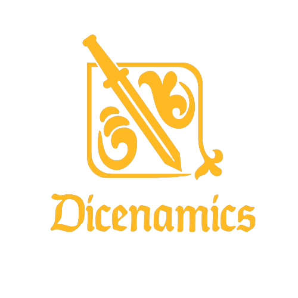

<!-- Navigation Bar -->
<mat-toolbar class="nav-bar" color="secondary">
    <a>
        
    </a>
    <span>
        Dicenamics
    </span>
    <span class="space"></span>
    <button mat-button class="btn-login">
        <span>Login</span>
        <mat-icon>login</mat-icon>
    </button>
</mat-toolbar>

<router-outlet>
    
</router-outlet>


<!--


    Como fazer os botões trocarem de display


<div>
    <h1 [ngStyle]="{'display' : mostrarBotoes ? 'block' : 'none'}">Botões extras</h1>
    <h1>Pagina inicial!</h1>
    <button (click)="mostrarBotoes = !mostrarBotoes" [ngStyle]="{'display' : !mostrarBotoes ? 'block' : 'none'}">login</button>
</div>
-->